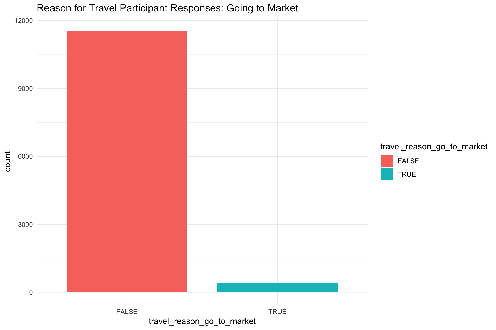
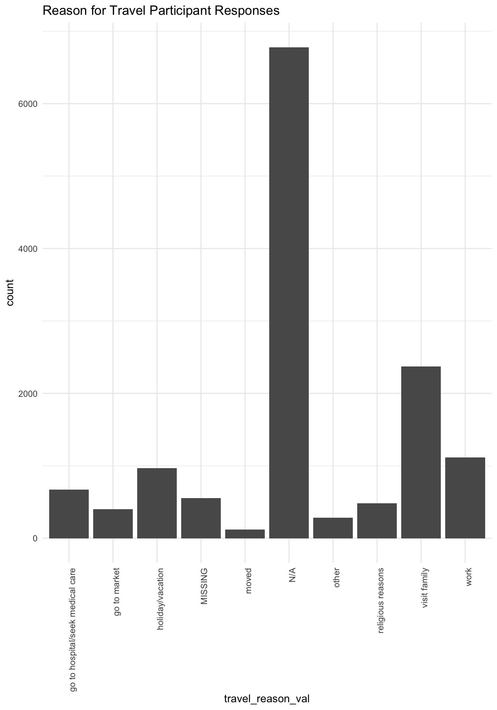

vignettes/multi_response_fields.rmd
multi_response_fields.rmdBefore exploring the tables in the EIDITH database using the eidith package, make sure to load it and some other libraries we’re going to need:
There are many fields in the PREDICT-2 EIDITH database that contain information from multiple-response questions. These fields are represented in the database by semicolon-separated strings like "rodents; primates; bats" or "for food; for sale; other". If you are interested in analyzing or visualizing the data from these fields, it can be hard to wrangle these semicolon-separated strings into correctly formatted variables.
Since this is an issue that comes up often in the PREDICT-2 EIDITH data, we have made functions to help users transform semicolon-separated variables into long format (most convenient for ggplot2 graphing) and wide format (used for some types of analysis).
ed2_expand_wide()
Let’s first look at transforming a semicolon-separated field into wide form. We can use the Human Questionnaire data as an example, looking specifically at the travel_reason field, which contains data from Question 38: Why have you traveled? Select all that apply
We can load this data into our session and then reduce it to just two variables to take an easier look at the process:
We can take a look at the head of this data to get an idea for how the travel_reason field looks. We can use kable() from the knitr package to get a cleaner looking output:
| participant_id | travel_reason |
|---|---|
| BDAH0175 | holiday/vacation |
| BDAH0176 | visit family |
| BDAH0177 | work ; visit family |
| BDAH0178 | visit family; holiday/vacation |
| BDAH0179 | work |
| BDAH0180 | visit family |
As you can see, some participants list only one travel_reason, while others list multiple reasons that are separated by semicolons.
We can use the ed2_expand_wide() function to expand these fields so that each travel_reason response is a separate variable, and whether a partipant has listed it in their response becomes a TRUE / FALSE value for that variable.
The first argument of the ed2_expand_wide() function takes the input dataframe we are going to transform (humans_reduced in our case), and the second argument indicates the column we wish to expand (travel_reason). There is an optional third argument clean_names which allows the user to toggle on or off the cleaning up of variable names after expansion; as a default, variable name cleaning will occur.
humans_reduced_wide <- ed2_expand_wide(humans_reduced, travel_reason)
head(humans_reduced_wide) %>% kable()| participant_id | travel_reason | travel_reason_go_to_hospital_seek_medical_care | travel_reason_go_to_market | travel_reason_holiday_vacation | travel_reason_moved | travel_reason_n_a | travel_reason_other | travel_reason_religious_reasons | travel_reason_visit_family | travel_reason_work |
|---|---|---|---|---|---|---|---|---|---|---|
| BDAH0001 | visit family | FALSE | FALSE | FALSE | FALSE | FALSE | FALSE | FALSE | TRUE | FALSE |
| BDAH0002 | visit family | FALSE | FALSE | FALSE | FALSE | FALSE | FALSE | FALSE | TRUE | FALSE |
| BDAH0003 | visit family | FALSE | FALSE | FALSE | FALSE | FALSE | FALSE | FALSE | TRUE | FALSE |
| BDAH0004 | visit family | FALSE | FALSE | FALSE | FALSE | FALSE | FALSE | FALSE | TRUE | FALSE |
| BDAH0005 | visit family | FALSE | FALSE | FALSE | FALSE | FALSE | FALSE | FALSE | TRUE | FALSE |
| BDAH0006 | visit family; holiday/vacation | FALSE | FALSE | TRUE | FALSE | FALSE | FALSE | FALSE | TRUE | FALSE |
Taking a look at the new humans_reduced_wide dataframe, we see that each row contains an individual participant identified by their participant_id, but their responses to the travel_reason question have been expanded into individual variables.
Notice that every participant response that was coded as “other” has been grouped together into one TRUE / FALSE variable. This is because many “other” entries in the PREDICT-2 EIDITH database contain additional information written in as free text – treating each one of these as a variable quickly becomes unmanageable.
This data format is necessary for certain types of analysis, and since each row represents a single participant, you can quickly do some visualizations (like a quick bar graph) for one TRUE / FALSE variable:
ggplot(data = humans_reduced_wide) +
geom_bar(aes(x = travel_reason_go_to_market, fill = travel_reason_go_to_market), width = 0.8) +
theme_minimal() +
labs(title = "Reason for Travel Participant Responses: Going to Market")
Single variables can be visualized in wide data format, but for most graphing applications data in long form is the way to go. Next, we’ll take a look at transforming multiple-response fields into a long data format
ed2_expand_long()
This time we are going to expand the travel_reason variable in the humans_reduced dataset into long form using the ed2_expand_long() function. Now each row of the dataframe will represent one response to the survey question, instead of one participant. This data format can be very useful for visualizing data using the ggplot2 package and may be necessary for certain types of analyses.
The first argument of the ed2_expand_long() function takes the input dataframe we are going to transform (humans_reduced in our case), and the second argument indicates the column we wish to expand (travel_reason). There is an optional third argument other_details that determines how we deal with “other” responses to a question, which we’ll talk about more later.
humans_reduced_long <- ed2_expand_long(humans_reduced, travel_reason)
head(humans_reduced_long) %>% kable()| participant_id | travel_reason | travel_reason_val | other_details |
|---|---|---|---|
| BDAH0175 | holiday/vacation | holiday/vacation | NA |
| BDAH0176 | visit family | visit family | NA |
| BDAH0177 | work ; visit family | work | NA |
| BDAH0177 | work ; visit family | visit family | NA |
| BDAH0178 | visit family; holiday/vacation | visit family | NA |
| BDAH0178 | visit family; holiday/vacation | holiday/vacation | NA |
If we take a look at this long form dataframe (either using head(humans_reduced_long) or View(humans_reduced_long), we can see that each row now represents one response value. As a result participants (identified by their participant_id) who have multiple response values are spread across multiple rows.
For many multiple-response fields, there is an option to write in an “other” value. As a result, one of the multiple responses will often be an “other” followed by free text with further explanation. Since most analyses or visualizations will want to group all other values together, the ed2_expand_long() function does this automatically. The function argument other_details determines whether the additional other_details variable is included which will preserve the free-text from the “other” entry, and is set to TRUE by default. The other_details field will be NA for all non-other categories.
We can take a look at the set of non-NA other_details data using the filter() function:
| participant_id | travel_reason | travel_reason_val | other_details |
|---|---|---|---|
| BDAH0030 | other-Education | other | Education |
| CGAH2007 | other-cas de decès | other | cas de decès |
| CGAH2008 | other-to buy wild animals to resell back in Brazzaville | other | to buy wild animals to resell back in Brazzaville |
| CISKBD0013 | visit family; other-tourism | other | tourism |
| CNBH0041 | holiday/vacation; other-learning | other | learning |
| CNBH2001 | other-study | other | study |
Looking at this subset of data, we can see that the freely entered “other” text has been preserved in the other_details field. If we set the other_details option to FALSE in the ed2_expand_long() function call, we will not have this additional column.
Data in long form is very easy to graph using ggplot2. In this example, we will make a bar graph that displays the responses to our travel question. Note the high number of “N/A” entries (for participants who did not travelat all).
ggplot(data = humans_reduced_long) +
geom_bar(aes(x = travel_reason_val)) +
theme_minimal() +
theme(axis.text.x=element_text(angle=90,hjust=1)) + # this line of code turns the x-axis labels so they are easier to read
labs(title = "Reason for Travel Participant Responses")
This vignette describes the built-in helper functions ed2_expand_wide() and ed2_expand_long() which allow users to break up semicolon-separated multiple-response variables into wide and long data formats. These are examples of helper functions which were developed to help users perform common actions. If you have an idea about a useful helper function, please check out the EIDITH R Package Issues page on Github.